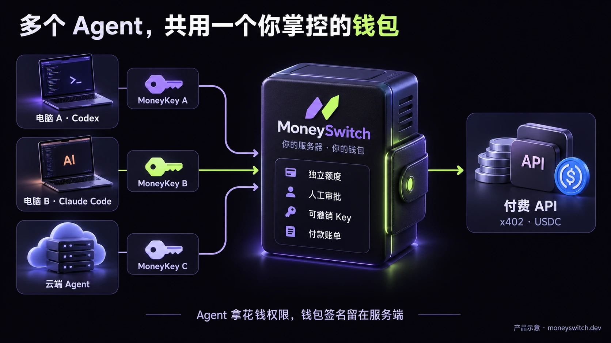

MoneySwitch · 两轮图片素材
AI Bot 的云钱包，
邀请你试，也邀请你改。
七张 AI 生成的概念配图，包含全新云钱包封面和 PR 招募海报。第一轮素材完整保留，均可下载使用。奖励口径：视试用与反馈情况酌情给予奖励，具体形式与标准另行说明。
第二轮 · Web3 云钱包与开源共建
05 · Web3 云钱包中文封面
1672 × 941。搭配新观点文章、知乎和中文博客，突出云钱包定位。
下载 PNG 原图 ↧
06 · Web3 cloud wallet cover
1672 × 941. Pair with the new English article or project introduction.
Download PNG ↧
07 · PR 贡献招募海报
1024 × 1536。邀请开发者从试用走到改文档、修 Bug 和提 PR；图片为概念示意。
下载 PNG 原图 ↧
第一轮 · 多 Agent 支出与早期试用
01 · 中文文章封面
1672 × 941，约 16:9。适合知乎、公众号、中文博客。
下载 PNG 原图 ↧
02 · English cover
1672 × 941. For the English article and project introduction.
Download PNG ↧

03 · 一个钱包怎样供多个 Agent 使用
1672 × 941。放在介绍 MoneyKey、额度和审批的段落之后。图片为产品示意。
下载 PNG 原图 ↧
04 · 竖版试用招募海报
1024 × 1536，2:3。配合招募短文使用，保留奖励条件和测试币说明。
下载 PNG 原图 ↧